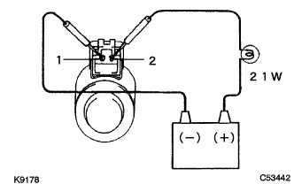

Lock -up control Solenoid (U441E) Single inspection |
| 1. Driving inspection |
|  |
Confirm that the battery plus is connected to the lock-up control solenoid (SLU) terminal 2 via the 12V-21w valve, and when the battery minus is connected to the terminal 1, the valve in the solenoid is activated.
| 2. Resistance inspection |
Use SST (Toyota Electrical Tester) to check the resistance between 1 ← → 2 terminals.